Social support
Current social support
Distribution
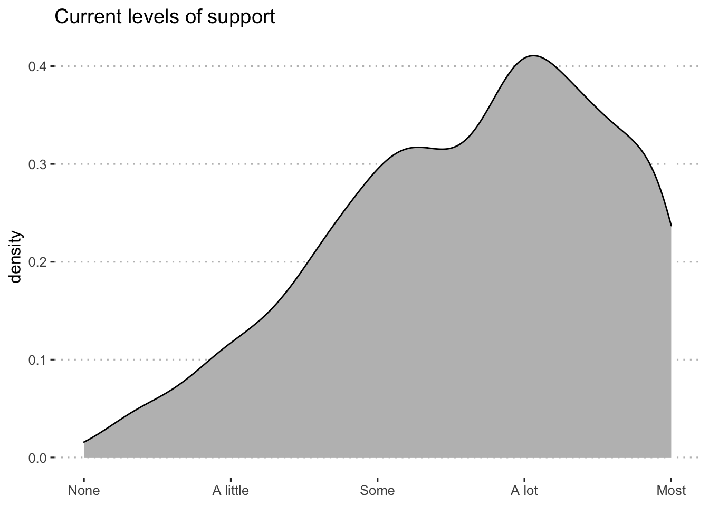
By Income
| group1 | group2 | p.value |
|---|---|---|
| Low Income | High Income | < .001 |
By Race
| group1 | group2 | p.value |
|---|---|---|
| Asian | American Indian/Alaska Native | > .999 |
| Black/African American | American Indian/Alaska Native | > .999 |
| Black/African American | Asian | > .999 |
| Multiple races | American Indian/Alaska Native | > .999 |
| Multiple races | Asian | .395 |
| Multiple races | Black/African American | > .999 |
| Native Hawaiian/Pacific Islander | American Indian/Alaska Native | > .999 |
| Native Hawaiian/Pacific Islander | Asian | > .999 |
| Native Hawaiian/Pacific Islander | Black/African American | > .999 |
| Native Hawaiian/Pacific Islander | Multiple races | > .999 |
| Other race | American Indian/Alaska Native | > .999 |
| Other race | Asian | > .999 |
| Other race | Black/African American | > .999 |
| Other race | Multiple races | > .999 |
| Other race | Native Hawaiian/Pacific Islander | > .999 |
| White/Caucasian | American Indian/Alaska Native | > .999 |
| White/Caucasian | Asian | > .999 |
| White/Caucasian | Black/African American | > .999 |
| White/Caucasian | Multiple races | .037 |
| White/Caucasian | Native Hawaiian/Pacific Islander | > .999 |
| White/Caucasian | Other race | .465 |
By Ethnicity
| group1 | group2 | p.value |
|---|---|---|
| Latinx | Not Latinx | .028 |
Caregiver Wellbeing
Overall
$plot 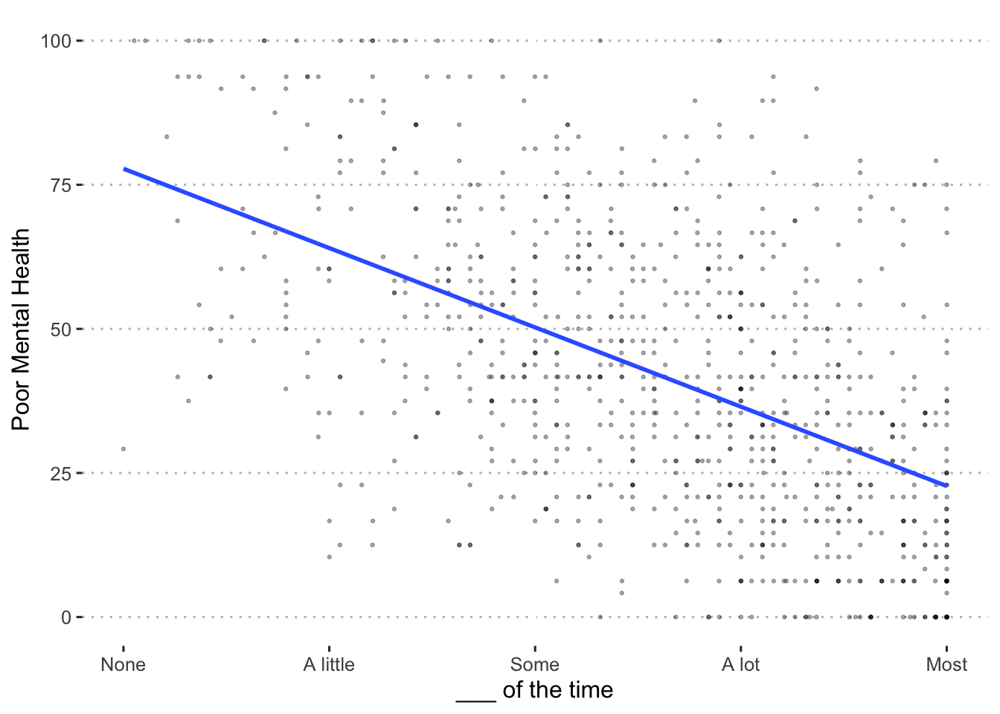 $summary
Income
$plot 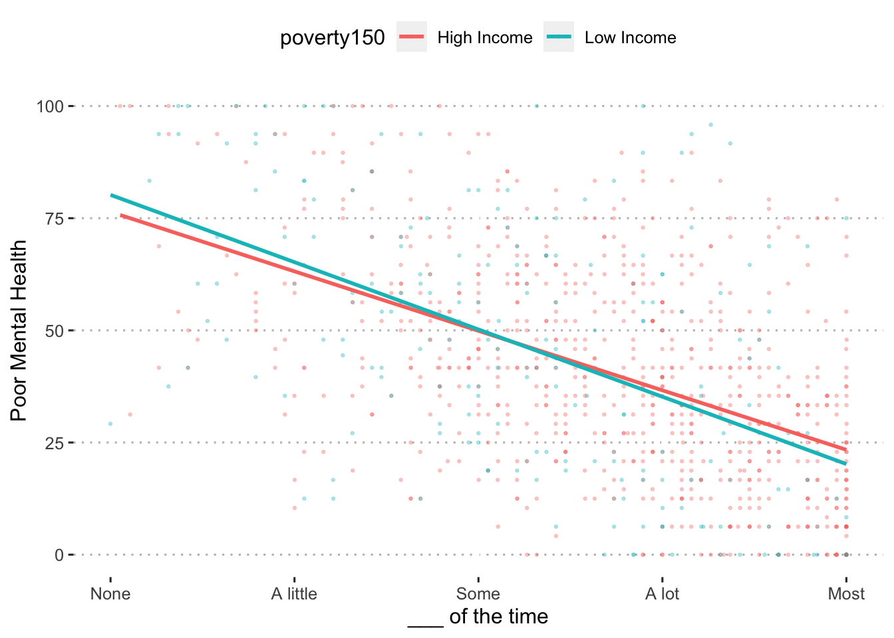 $summary
Race
$plot 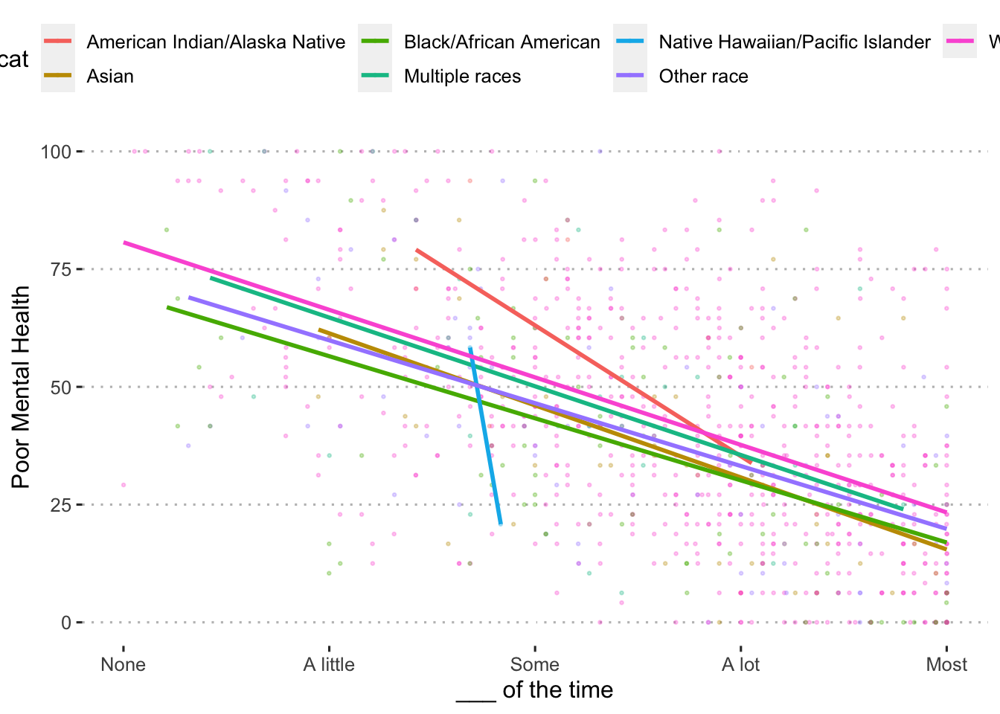 $summary
Ethnicity
$plot  $summary
$summary
Child Externalizing
Overall
$plot 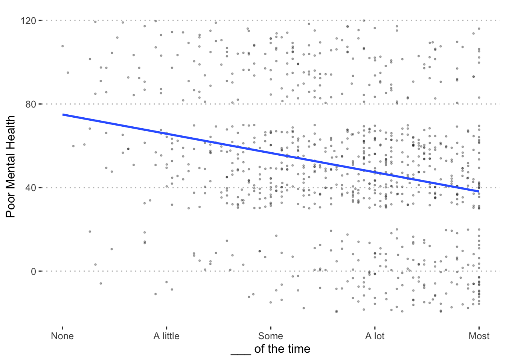 $summary
Income
$plot 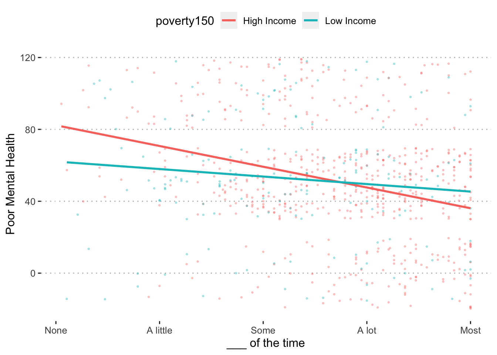 $summary
Race
$plot 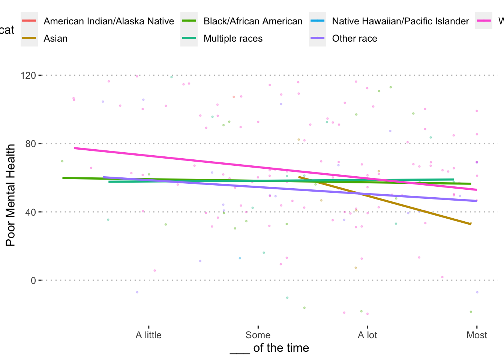 $summary
Ethnicity
$plot 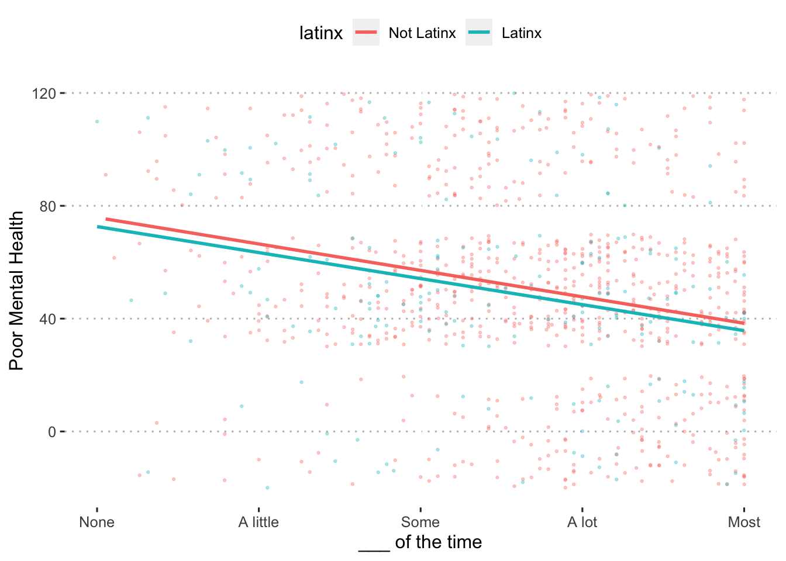 $summary
Child Internalizing
Overall
$plot 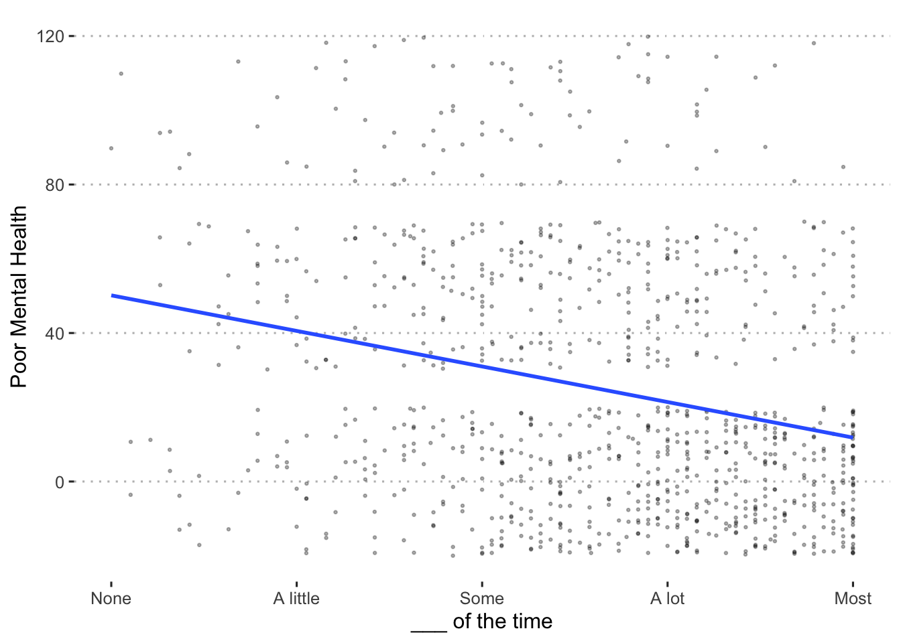 $summary
Income
$plot 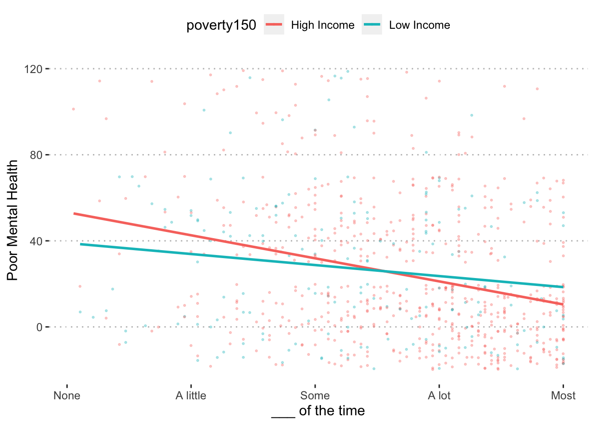 $summary
Race
$plot 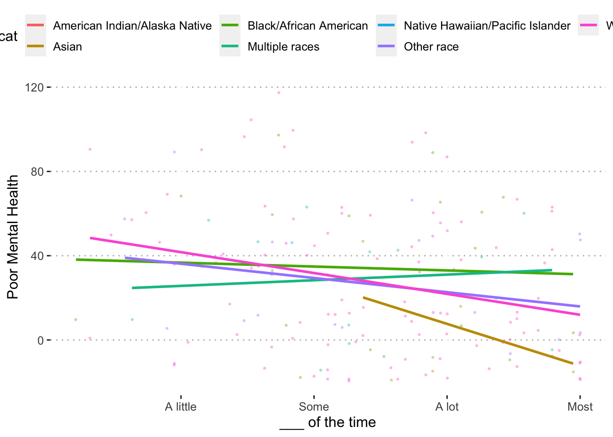 $summary
Ethnicity
$plot 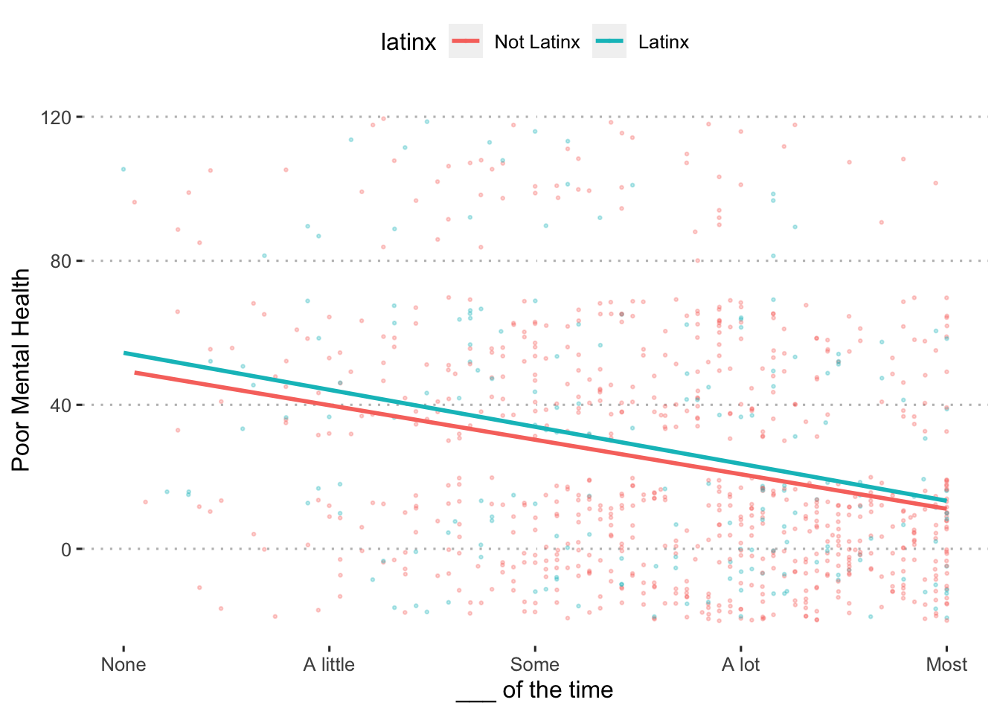 $summary
Sources of support
Note that for single caregivers, responses to “partner/spouse” support are removed.
Current
Overall
Income
| Source | Est | Lower CI | Upper CI | t | p |
|---|---|---|---|---|---|
| Partner/Spouse | 0.07 | 0.01 | 0.13 | 2.13 | .274 |
| Child | -0.06 | -0.14 | 0.02 | -1.59 | .681 |
| Parent | 0.10 | 0.02 | 0.18 | 2.46 | .144 |
| Other relatives | 0.08 | 0.00 | 0.15 | 2.08 | .274 |
| Friend | 0.03 | -0.04 | 0.11 | 0.85 | > .999 |
| Neighbor | 0.03 | -0.02 | 0.09 | 1.21 | > .999 |
| Co-worker | 0.12 | 0.07 | 0.17 | 4.54 | < .001 |
| Religious group | -0.01 | -0.06 | 0.03 | -0.60 | > .999 |
| Spiritual figure | 0.01 | -0.06 | 0.08 | 0.27 | > .999 |
| Parent support group | 0.06 | 0.01 | 0.12 | 2.23 | .239 |
| Health professional | 0.01 | -0.05 | 0.06 | 0.17 | > .999 |
Race
| source | Black-Asian | Multi-Asian | Multi-Black | Other-Asian | Other-Black | Other-Multi | White-Asian | White-Black | White-Multi | White-Other |
|---|---|---|---|---|---|---|---|---|---|---|
| Partner/Spouse | > .999 | > .999 | > .999 | > .999 | > .999 | > .999 | > .999 | > .999 | > .999 | > .999 |
| Child | > .999 | > .999 | > .999 | > .999 | > .999 | > .999 | > .999 | > .999 | > .999 | .081 |
| Parent | > .999 | > .999 | > .999 | > .999 | > .999 | > .999 | > .999 | > .999 | > .999 | > .999 |
| Other relatives | > .999 | > .999 | > .999 | > .999 | > .999 | > .999 | > .999 | > .999 | > .999 | > .999 |
| Friend | > .999 | > .999 | > .999 | > .999 | > .999 | > .999 | > .999 | > .999 | > .999 | > .999 |
| Neighbor | > .999 | > .999 | > .999 | > .999 | > .999 | > .999 | > .999 | > .999 | > .999 | > .999 |
| Co-worker | > .999 | > .999 | > .999 | > .999 | > .999 | > .999 | > .999 | > .999 | > .999 | > .999 |
| Religious group | > .999 | > .999 | > .999 | > .999 | > .999 | > .999 | > .999 | > .999 | > .999 | > .999 |
| Spiritual figure | > .999 | > .999 | > .999 | > .999 | > .999 | > .999 | > .999 | > .999 | > .999 | > .999 |
| Parent support group | > .999 | > .999 | > .999 | > .999 | > .999 | > .999 | > .999 | > .999 | > .999 | > .999 |
| Health professional | > .999 | > .999 | > .999 | > .999 | > .999 | > .999 | > .999 | > .999 | > .999 | > .999 |
Ethnicity
| Source | Est | Lower CI | Upper CI | t | p |
|---|---|---|---|---|---|
| Partner/Spouse | -0.02 | -0.07 | 0.03 | -0.75 | > .999 |
| Child | -0.18 | -0.26 | -0.10 | -4.53 | < .001 |
| Parent | -0.01 | -0.09 | 0.07 | -0.25 | > .999 |
| Other relatives | 0.04 | -0.03 | 0.12 | 1.16 | > .999 |
| Friend | 0.15 | 0.07 | 0.23 | 3.74 | .002 |
| Neighbor | 0.04 | -0.01 | 0.10 | 1.49 | > .999 |
| Co-worker | 0.04 | -0.02 | 0.10 | 1.28 | > .999 |
| Religious group | 0.00 | -0.04 | 0.04 | 0.00 | > .999 |
| Spiritual figure | 0.01 | -0.07 | 0.09 | 0.28 | > .999 |
| Parent support group | 0.07 | 0.01 | 0.12 | 2.39 | .157 |
| Health professional | 0.03 | -0.03 | 0.09 | 1.05 | > .999 |
Prior
Overall
Income
| Source | Est | Lower CI | Upper CI | t | p |
|---|---|---|---|---|---|
| Partner/Spouse | 0.07 | 0.01 | 0.13 | 2.13 | .306 |
| Child | -0.04 | -0.12 | 0.04 | -0.98 | > .999 |
| Parent | 0.08 | 0.00 | 0.15 | 1.98 | .385 |
| Other relatives | -0.01 | -0.09 | 0.07 | -0.30 | > .999 |
| Friend | 0.13 | 0.06 | 0.20 | 3.69 | .003 |
| Neighbor | 0.05 | -0.01 | 0.12 | 1.61 | .763 |
| Co-worker | 0.20 | 0.13 | 0.28 | 5.36 | < .001 |
| Religious group | -0.02 | -0.09 | 0.05 | -0.51 | > .999 |
| Spiritual figure | -0.06 | -0.14 | 0.02 | -1.56 | .763 |
| Parent support group | 0.01 | -0.07 | 0.08 | 0.16 | > .999 |
| Health professional | -0.02 | -0.09 | 0.05 | -0.62 | > .999 |
Race
| source | Black-Asian | Multi-Asian | Multi-Black | Other-Asian | Other-Black | Other-Multi | White-Asian | White-Black | White-Multi | White-Other |
|---|---|---|---|---|---|---|---|---|---|---|
| Partner/Spouse | > .999 | > .999 | > .999 | > .999 | > .999 | > .999 | > .999 | .854 | > .999 | > .999 |
| Child | > .999 | > .999 | > .999 | > .999 | > .999 | > .999 | > .999 | > .999 | > .999 | > .999 |
| Parent | > .999 | > .999 | > .999 | > .999 | > .999 | > .999 | > .999 | > .999 | > .999 | > .999 |
| Other relatives | > .999 | > .999 | > .999 | > .999 | > .999 | > .999 | > .999 | > .999 | > .999 | > .999 |
| Friend | > .999 | > .999 | > .999 | > .999 | > .999 | > .999 | > .999 | > .999 | > .999 | > .999 |
| Neighbor | > .999 | > .999 | > .999 | > .999 | > .999 | > .999 | > .999 | > .999 | > .999 | > .999 |
| Co-worker | > .999 | > .999 | > .999 | > .999 | > .999 | > .999 | > .999 | > .999 | > .999 | > .999 |
| Religious group | > .999 | > .999 | > .999 | > .999 | > .999 | > .999 | > .999 | > .999 | > .999 | > .999 |
| Spiritual figure | > .999 | > .999 | > .999 | > .999 | > .999 | > .999 | > .999 | > .999 | > .999 | > .999 |
| Parent support group | > .999 | > .999 | > .999 | > .999 | > .999 | > .999 | > .999 | > .999 | > .999 | > .999 |
| Health professional | > .999 | > .999 | > .999 | > .999 | > .999 | > .999 | > .999 | > .999 | > .999 | > .999 |
Ethnicity
| Source | Est | Lower CI | Upper CI | t | p |
|---|---|---|---|---|---|
| Partner/Spouse | 0.08 | 0.01 | 0.14 | 2.26 | .200 |
| Child | -0.11 | -0.20 | -0.03 | -2.67 | .074 |
| Parent | 0.00 | -0.08 | 0.07 | -0.11 | > .999 |
| Other relatives | -0.11 | -0.19 | -0.03 | -2.70 | .074 |
| Friend | 0.12 | 0.05 | 0.20 | 3.22 | .016 |
| Neighbor | -0.05 | -0.13 | 0.02 | -1.41 | > .999 |
| Co-worker | 0.03 | -0.06 | 0.11 | 0.63 | > .999 |
| Religious group | -0.03 | -0.10 | 0.05 | -0.71 | > .999 |
| Spiritual figure | -0.05 | -0.14 | 0.03 | -1.32 | > .999 |
| Parent support group | -0.01 | -0.09 | 0.07 | -0.20 | > .999 |
| Health professional | 0.03 | -0.05 | 0.10 | 0.70 | > .999 |
Change
Overall
Income
| source | statistic | p.value |
|---|---|---|
| Partner/Spouse | 8.84 | .252 |
| Child | 5.79 | .607 |
| Parent | 6.28 | .607 |
| Other relatives | 5.81 | .607 |
| Friend | 17.72 | .005 |
| Neighbor | 2.53 | > .999 |
| Co-worker | 29.62 | < .001 |
| Religious group | 0.63 | > .999 |
| Spiritual figure | 19.43 | .002 |
| Parent support group | 6.58 | .607 |
| Health professional | 1.87 | > .999 |
Race
| source | statistic | p.value |
|---|---|---|
| Partner/Spouse | 8.84 | .252 |
| Child | 5.79 | .607 |
| Parent | 6.28 | .607 |
| Other relatives | 5.81 | .607 |
| Friend | 17.72 | .005 |
| Neighbor | 2.53 | > .999 |
| Co-worker | 29.62 | < .001 |
| Religious group | 0.63 | > .999 |
| Spiritual figure | 19.43 | .002 |
| Parent support group | 6.58 | .607 |
| Health professional | 1.87 | > .999 |
Ethnicity
| source | statistic | p.value |
|---|---|---|
| Partner/Spouse | 18.31 | .003 |
| Child | 35.24 | < .001 |
| Parent | 16.58 | .005 |
| Other relatives | 17.98 | .004 |
| Friend | 22.85 | < .001 |
| Neighbor | 11.02 | .058 |
| Co-worker | 4.27 | .467 |
| Religious group | 0.86 | .834 |
| Spiritual figure | 16.78 | .005 |
| Parent support group | 8.90 | .123 |
| Health professional | 7.81 | .150 |